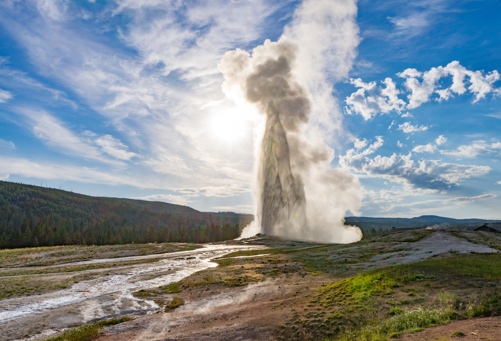
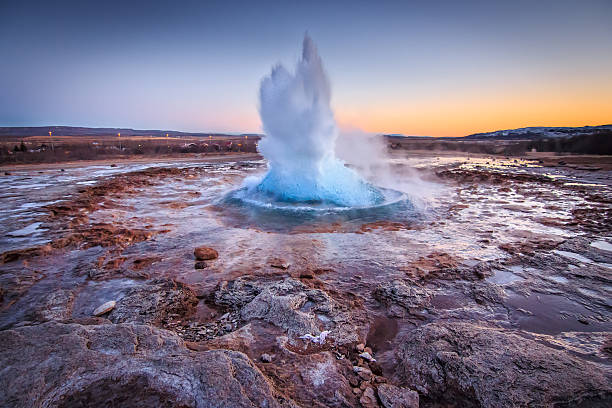

Qu'est-ce qu'un geyser ?
C’est une source d'eau chaude qui jaillit violemment, par intermittence. Le mot « geyser » vient du plus célèbre geyser d’Islande nommé Geysir, et situé au sud-ouest du pays dans la vallée de l’Haukadalur.
Geysir signifie : qui jaillit, et dérive du verbe islandais "gjósa" ou "geysa", signifiant « jaillir ». En effet il y a beaucoup de geysers en Islande, pays le plus actif au monde volcaniquement parlant.
Il existe deux types de geysers. Le geyser dit « fontaine » est terminé par un cône étroit, avec un conduit très fin. Lorsqu'une éruption se produit et qu'une colonne d'eau jaillit, elle est en fait expulsée par la pression due à l'étroitesse du conduit. C'est le cas par exemple d'Old Faithful.

L'autre type de geyser est le geyser dit « gazeux ». Il s'agit généralement d'une source chaude qui, lorsque du gaz est expulsé, fait remonter les bulles d'eau qui explosent au contact de la surface et qui créent une large colonne d'eau, souvent de courte durée. C'est le cas par exemple du Strokkur.
